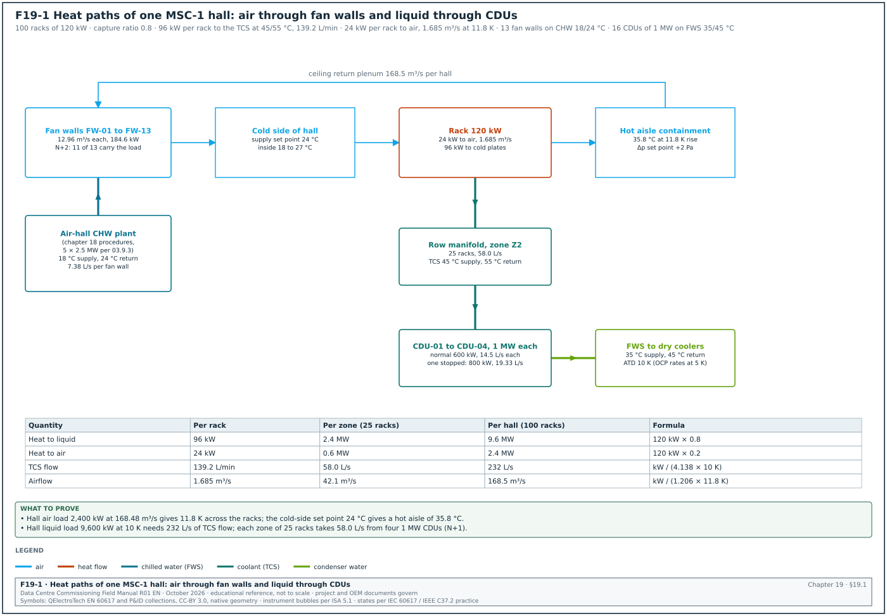
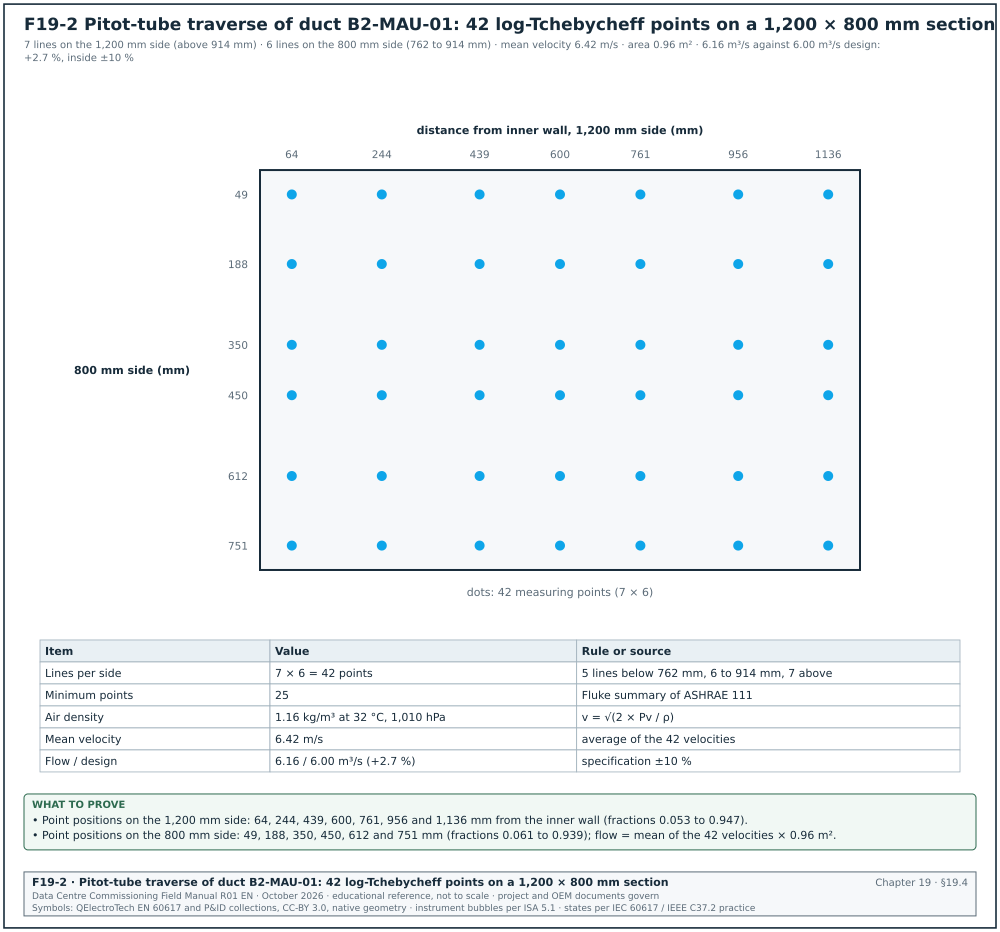
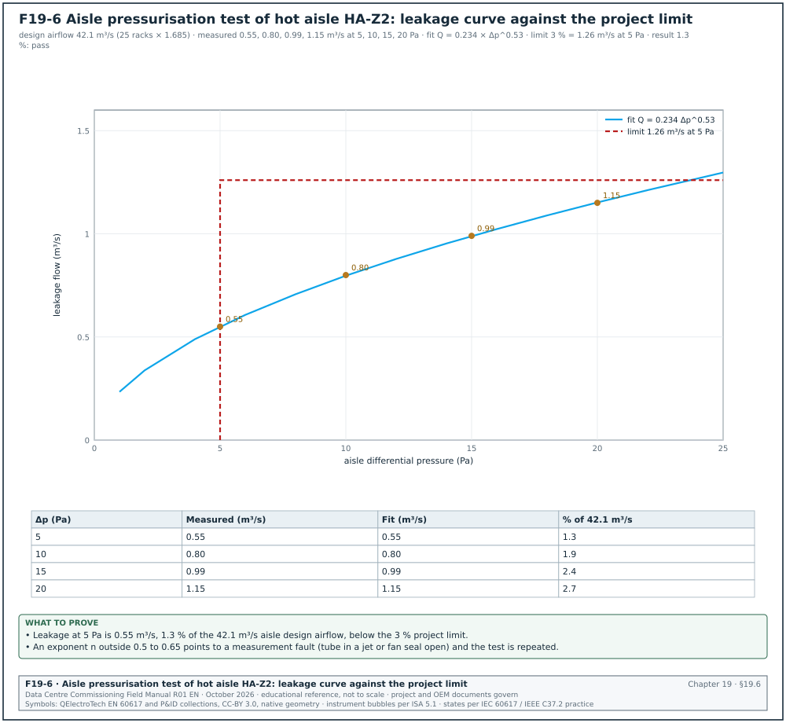
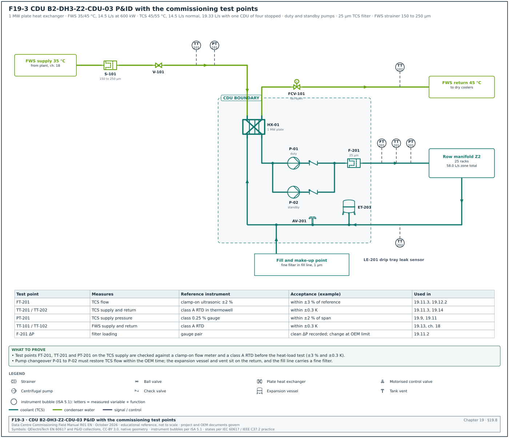
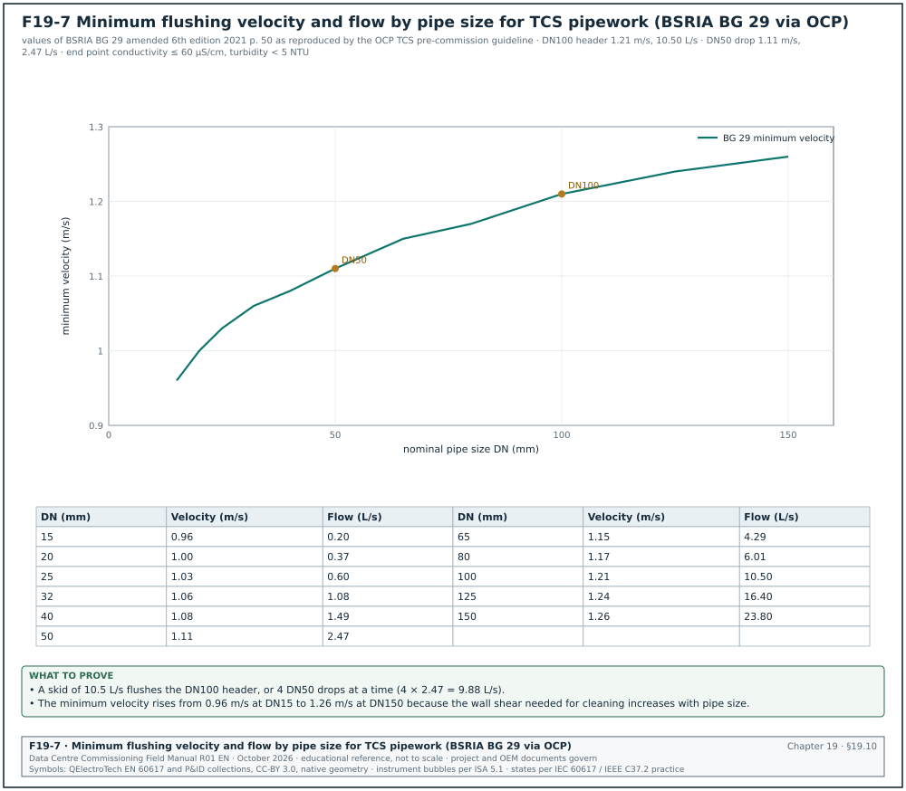
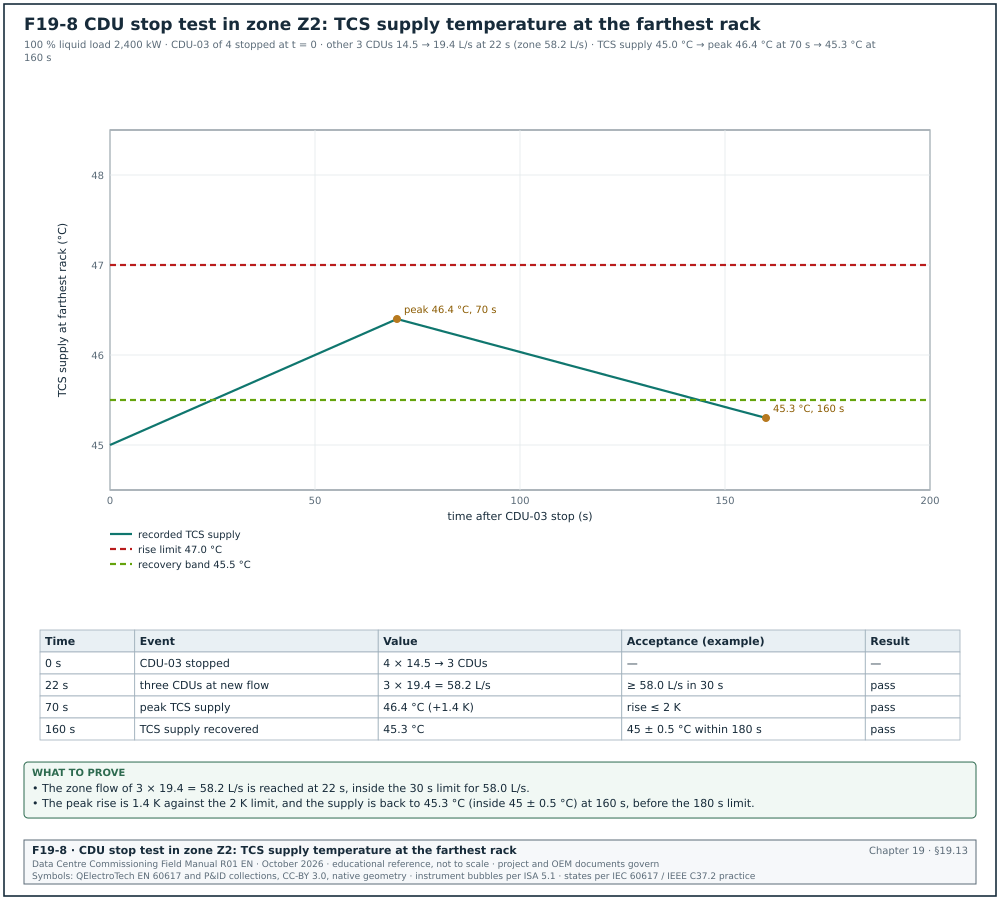
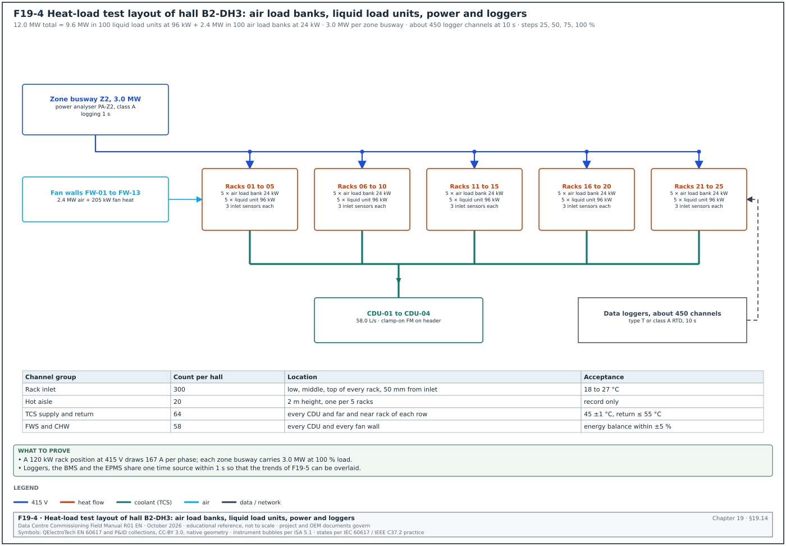
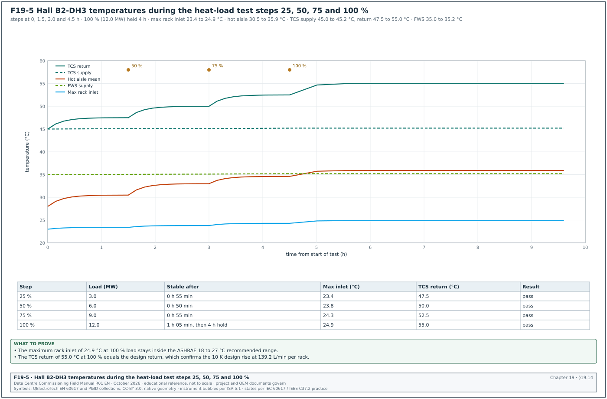

19.0Scope of this chapter
This chapter covers the cooling equipment inside a data hall. It covers the air-side units that cool the room air, and the liquid-cooling equipment that carries heat away from cold plates on the servers. It gives the commissioning manager the tests, instruments, applied values, acceptance values and records needed to witness and sign each step from start-up to the heat-load test.
- Heat paths in the hall. How the heat of a 120 kW rack splits between air and liquid, and the flows that result.
- Thermal envelopes. The ASHRAE Technical Committee 9.9 (TC 9.9) air classes A1 to A4 and H1, the 2021 recommended range, and the liquid classes W17 to W+.
- Computer room air handlers (CRAH) and fan walls. Construction, pre-functional checks and start-up.
- Airflow measurement. Pitot-tube traverses, fan inlet-ring (k-factor) readings, capture hoods and velocity grids, with instrument accuracy.
- Testing, adjusting and balancing (TAB). The process of the National Environmental Balancing Bureau (NEBB) and the Associated Air Balance Council (AABC), CIBSE Commissioning Code A and BSRIA BG 49, and the tolerances.
- Containment. Aisle containment leakage testing and pressure control.
- Functional performance tests of air units. Capacity, redundancy and control tests.
- Technology cooling system (TCS) and coolant distribution unit (CDU). Design basis, pressure testing, cleaning, flushing, water quality, filling, venting, filtration, leak detection, flow per rack and failover.
- Heat-load testing. Air and liquid load banks, load steps, stabilisation, energy balance and the trend records.
- Energy checks. The ASHRAE Standard 90.4 mechanical load component (MLC) and the fan and pump power records.
Documents and standards used: ASHRAE Thermal Guidelines for Data Processing Environments, 5th edition (2021) and its ASHRAE Technical Committee (TC) 9.9 reference card. The balancing documents are ANSI/ASHRAE Standard 111-2008 (measurement, testing, adjusting and balancing) and the NEBB Procedural Standard for Testing, Adjusting and Balancing of Environmental Systems, 9th edition (2019). The other air-side documents are the AABC National Standards for Total System Balance, 7th edition; CIBSE Commissioning Code A: Air distribution systems (2024); BSRIA BG 49/2024 Commissioning air systems. The cleaning and liquid-cooling documents are BSRIA BG 29 Pre-commission cleaning of pipework systems (amended 6th edition, 2021) and Open Compute Project (OCP) Guidelines for pre-commission preparation of TCS row manifolds (January 2025). The OCP documents also include the OCP Base specification for single-phase water-based cold plate coolants v1.3 (2026); OCP Base specification for PG25 coolant v1.0; OCP Liquid-to-liquid CDU test methodology and performance rating rev 1.0 (2024). The equipment and instrument documents are AHRI Standard 1360 (rating of computer room air conditioners and CRAH units); ANSI/ASHRAE/IES Standard 90.4 (energy standard for data centres); ASME B31.3 and B31.9 (piping pressure tests); IEC 60751 (platinum resistance thermometers); ASTM E230 (thermocouple tolerances); ISO 8573-1 (compressed air purity). Chapter 18 covers the chilled-water and facility-water plant upstream of the CDUs, and chapter 28 covers the integrated systems tests that use the results of this chapter.
19.1Air and liquid heat paths in a liquid-cooled hall


19.1.1How the heat leaves a rack
A rack with liquid-cooled servers still rejects part of its heat to air. The cold plates on the processors and accelerators take most of the heat into the coolant. Power supplies, memory, drives, network cards and the server fans reject the rest to the room air. The fraction captured by the liquid is the capture ratio.
Figure F19-1 shows both paths for one hall. In the MSC-1 worked example a hall has 100 racks of 120 kW and a capture ratio of 0.8. The TCS runs at 45 °C supply and 55 °C return, and the facility water (FWS) at 35 °C supply and 45 °C return. The air side uses chilled water (CHW) at 18 °C supply and 24 °C return.
| Quantity | Per rack | Per zone (25 racks) | Per hall (100 racks) | How it is derived |
|---|---|---|---|---|
| IT load | 120 kW | 3.0 MW | 12.0 MW | case ledger |
| Heat to liquid (capture 0.8) | 96 kW | 2.4 MW | 9.6 MW | 120 × 0.8 |
| Heat to air | 24 kW | 0.6 MW | 2.4 MW | 120 × 0.2 |
| TCS flow at 10 K | 139.2 L/min (2.32 L/s) | 58.0 L/s | 232.0 L/s | 24.17 L/s per MW |
| Airflow at 11.8 K | 1.685 m³/s | 42.1 m³/s | 168.5 m³/s | case ledger 168.48 m³/s |
| CDUs | — | 4 of 1 MW (N+1) | 16 | case ledger |
19.1.2Flow formulas used in every test
- Liquid heat. Heat (kW) = ρ × cp × Q × ΔT, with Q in m³/s, ρ × cp in kJ/(m³·K) and ΔT in K. For water at 50 °C, ρ × cp is about 4,138 kJ/(m³·K), which gives 24.17 L/s per MW at 10 K. For PG25 the value is lower by up to 10 %, so the flow per MW rises by the same amount.
- Air heat. Heat (kW) = ρ × cp × V × ΔT, with V in m³/s. For air at 1.2 kg/m³ and 1.005 kJ/(kg·K), ρ × cp is 1.206 kJ/(m³·K). The MSC-1 hall air load of 2,400 kW at 168.48 m³/s gives ΔT = 2,400 / (1.206 × 168.48) = 11.8 K across the racks.
- Flow per kW. The TCS flow of 139.2 L/min for 96 kW is 1.45 L/min per kW. The OCP liquid-to-liquid CDU test methodology rates CDUs at 1.5 L/min per kW, so the MSC-1 design sits close to that rating point.
- Approach temperature difference (ATD). The OCP CDU methodology defines ATD as TCS supply temperature minus FWS supply temperature. MSC-1 has ATD = 45 − 35 = 10 K. OCP rates CDU capacity at ATD 5 K, so a CDU rated 1 MW at 5 K has margin at the MSC-1 condition.
Worked example: In the MSC-1 worked example, zone Z2 of hall B2-DH3 carries 25 racks at 96 kW liquid load, 2,400 kW in total. The TCS flow at a 10 K rise is 2,400 / (4.138 × 10) = 58.0 L/s. With four CDUs running, each delivers 14.5 L/s (870 L/min) and 600 kW. With one CDU stopped, each of the remaining three delivers 19.33 L/s (1,160 L/min) and 800 kW, which is 80 % of the 1 MW rating. The FWS side of each CDU at 600 kW and a 10 K rise needs 600 / (4.146 × 10) = 14.5 L/s.
19.1.3Interfaces of the hall cooling scope
| Interface | Provided by | Needed by this chapter | Record that closes it |
|---|---|---|---|
| CHW at 18 °C to fan wall coils | chapter 18 plant, mechanical contractor | CRAH capacity tests | CHW plant L4 certificate |
| FWS at 35 °C to CDU primary | chapter 18 plant | CDU tests | FWS flushing certificate and water analysis |
| Power A and B to fan walls and CDUs | electrical contractor | all functional tests | L3 electrical checklists |
| building management system (BMS) points for fans, valves, CDUs, leak detection | BMS contractor (chapter 22) | sequence tests | BMS point-to-point record |
| Rack manifolds and hoses | rack integrator or owner IT | flushing, fill, flow per rack | manifold pressure test record |
| Load banks and liquid load units | load bank supplier | heat-load test | load bank calibration certificates |
19.2Thermal envelopes: ASHRAE TC 9.9 air classes and liquid W-classes
19.2.1Air-cooling classes
ASHRAE TC 9.9 publishes the environmental classes for information technology equipment (ITE). The commissioning manager uses them to set the acceptance limits for rack inlet air during the heat-load test and the integrated systems test. The values below are from Table 2.1 of the 2021 Thermal Guidelines (5th edition) reference card.
| Class | Dry bulb (°C) | Humidity range, non-condensing | Max. dew point (°C) |
|---|---|---|---|
| Recommended, A1 to A4 | 18 to 27 | −9 °C dew point (DP) to 15 °C DP and 70 % relative humidity (RH) (or 50 % RH) | 15 |
| A1 allowable | 15 to 32 | −12 °C DP and 8 % RH to 17 °C DP and 80 % RH | 17 |
| A2 allowable | 10 to 35 | −12 °C DP and 8 % RH to 21 °C DP and 80 % RH | 21 |
| A3 allowable | 5 to 40 | −12 °C DP and 8 % RH to 24 °C DP and 85 % RH | 24 |
| A4 allowable | 5 to 45 | −12 °C DP and 8 % RH to 24 °C DP and 90 % RH | 24 |
| H1 recommended / allowable | 18 to 22 / 15 to 25 | as recommended / as A1 | 17 |
- The 70 % or 50 % RH limit. The recommended upper humidity is 70 % RH when copper and silver coupon tests show corrosion below 300 and 200 Å per month. Where coupons exceed these rates, the limit is 50 % RH. Jakarta sites with traffic and industrial pollution need the coupon test before the 70 % value is used.
- Temperature change limit. For ITE other than tape, the inlet temperature may change by no more than 20 °C in one hour and 5 °C in any 15-minute period. ASHRAE defines each value as the difference between the highest and lowest inlet temperature within the stated time window. This limit is the acceptance value for transients in failover tests.
- Altitude derating. A1 and A2 lose 1 °C of maximum allowable dry bulb per 300 m above 900 m. Jakarta sites sit below 900 m, so no derating applies.
- Class H1. H1 is a zone for high-density air-cooled products with a recommended range of 18 to 22 °C. Liquid-cooled racks that still need air for 20 % of their heat follow the original equipment manufacturer (OEM) rack specification, which may be H1 or A1.
19.2.2Liquid-cooling classes
The 2021 Thermal Guidelines Table 3.1 defines liquid-cooling classes by facility water supply temperature. The minimum water temperature for all classes is 2 °C. Operating within a class means the equipment runs at full performance over the whole range of the class.
| Class | Facility water supply (°C) | Typical primary plant | Typical supplemental plant |
|---|---|---|---|
| W17 | 17 | chiller and cooling tower | water-side economiser |
| W27 | 27 | chiller and cooling tower | water-side economiser |
| W32 | 32 | cooling tower | chiller or district heating |
| W40 | 40 | cooling tower | chiller or district heating |
| W45 | 45 | cooling tower | district heating |
| W+ | above 45 | cooling tower | district heating |
Worked example: In the MSC-1 worked example the FWS supply is 35 °C, so the facility side meets class W40 (supply up to 40 °C) and is outside W32. The servers must be specified as W40 or W45 equipment. The TCS supply of 45 °C is the secondary loop temperature at the cold plate, and the server OEM sets it. The commissioning manager records the OEM limit as the acceptance limit for the heat-load and failover tests (for example, maximum TCS supply 45 °C, maximum rate of change 3 K per minute; the values come from the OEM liquid-cooling specification).
19.2.3Where to measure
- Rack inlet air. Measure at the server air inlet face, at three heights (low, middle, top), 50 mm in front of the rack door. ASHRAE defines the inlet as the conditions at the ITE inlet; a reading in the middle of the cold aisle does not meet this definition.
- TCS supply at the rack. Measure at the rack manifold supply, as close as possible to the quick disconnects (QD). The CDU outlet sensor reads lower than the rack supply when the pipe gains heat from a hot aisle.
- Dew point in the hall. Measure in the cold aisle and in the return path. The TCS and FWS pipes at 35 to 45 °C sit far above the hall dew point, so condensation risk exists only on the 18 °C CHW pipes and coils.
19.3CRAH and fan wall units: construction, pre-functional checks and start-up
19.3.1What the units are
A computer room air handler (CRAH) is a fan and a chilled-water coil in one cabinet, placed in the hall or in a gallery. A fan wall is a large air handler built into the wall of a service gallery. It has a bank of electronically commutated (EC) fans, a filter bank and a chilled-water coil, and blows air directly into the cold aisle or into the hall. On MSC-1 the air-side units are fan walls in two galleries on each side of the hall. The fan-wall units are the hall's CRAH units counted in chapter 21, and they carry the same tags B2-DH3-FW-nn. The BMS points list in chapter 21 and the asset register in chapter 27 count the same 13 devices per hall (39 per building). AHRI Standard 1360 is the rating standard for computer and data processing room air conditioners and covers the CRAH rating conditions.
| Item | MSC-1 example value | Source of the value |
|---|---|---|
| Fan wall units per hall | 13 installed, 11 needed (N+2) | design basis (example) |
| Fans per unit | 12 EC fans | OEM data (example) |
| Normal airflow per unit | 12.96 m³/s (168.48 / 13) | case ledger and design basis |
| Airflow per unit with 2 units out | 15.32 m³/s | 168.48 / 11 |
| Design duty per unit | 184.6 kW normal, 218.2 kW with 2 out | 2,400 kW / 13 and / 11 |
| CHW flow per unit at 184.6 kW, 6 K | 7.38 L/s | 184.6 / (4.18 × 6 × 0.998) |
| Cold-aisle supply set point | 24 °C | inside 18 to 27 °C recommended |
| Hot-aisle temperature | 35.8 °C | 24 + 11.8 K |
19.3.2Pre-functional (Level 3) checks
Purpose: Prove each fan wall is installed, wired and set up per the drawings and the OEM manual before the OEM start-up engineer energises it.
Owner: Mechanical contractor, witnessed by the commissioning authority (CxA).
Steps:
- Check the nameplate. Record model, serial number, coil rows, fan count and motor rating against the approved submittal. A mismatch is a non-conformance report (NCR) before start-up.
- Check fan installation. Confirm each EC fan is fixed, the inlet ring is clean and the guard is fitted. Turn each impeller by hand with the unit isolated; it must turn freely.
- Check the filter bank. Confirm the filter grade (for example ISO 16890 ePM1 50 % or as specified), that every frame is full, and that the seals have no gaps. Record the clean-filter pressure drop given by the OEM (for example 60 Pa; the value comes from the filter OEM data).
- Check the coil. Confirm the coil fins are undamaged (combed where bent) and the vent and drain valves are fitted. Confirm the CHW connections carry the flexible connectors and isolating valves shown on the drawing.
- Check the control valve. Confirm the valve body size, the actuator type and the fail position (for example fail-open on loss of signal) against the valve schedule.
- Check sensors. Confirm supply-air and return-air temperature sensors, filter differential pressure switch, fan alarm contacts and the containment differential pressure sensor are installed at the drawing locations.
- Check power. Confirm the A and B supplies, the automatic transfer device if fitted, the earthing and the cable labels. Record insulation resistance per chapter 14.
- Check controls wiring. Confirm the fan Modbus or analogue wiring and the BMS points per the points list (chapter 21), with each fan address unique.
- Check cleanliness. Confirm the plenum, gallery and hall floor are clean and vacuumed. Construction dust drawn into the coil and the servers is the most frequent defect found at start-up.
Records: L3 checklist MEC-L3-FW-nn with one row per check, the photos of the nameplate and filter bank, and the sensor calibration certificates.
19.3.3Start-up (Level 3)
- Prerequisites. The CHW loop is flushed and certified (chapter 18) and the CHW is at 18 °C. Power is available on both feeds, and the BMS point-to-point test for the unit is done.
- Vent the coil. Open the coil vent until water runs without air, then close it. Record the time and the person.
- Energise the controller. Check the firmware version against the approved version list and record it.
- Run each fan. Start each fan alone at 30 % speed and check the rotation direction, noise and vibration. Then run all fans at 100 % for 15 minutes.
- Read fan data. Record speed (rpm), power (W) and current per fan from the fan controller. Check any fan more than 10 % away from the mean power at the same speed for a blocked inlet or a damaged impeller (project tolerance from the project specification).
- Stroke the valve. Command the CHW valve to 0, 50 and 100 % and record the actuator feedback. Feedback must be within ±5 % of command (project tolerance).
- Test alarms. Simulate fan failure, filter high pressure drop and supply air high temperature. Confirm each alarm at the unit display and at the BMS, and record it on the L3 checklist MEC-L3-FW-nn.
- Hand over the start-up report. The OEM start-up engineer signs the start-up sheet. The CxA attaches it to the L3 record.
Common errors:
- Fans with duplicate addresses. Two fans with the same Modbus address make the controller read one fan twice and miss another. Check the address list against the fan count on the controller screen.
- Coil left air-bound. An air-locked coil gives low capacity on the functional test. Vent again and repeat the reading before raising a capacity NCR.
- Sensors swapped. Supply and return sensors swapped give an apparent negative ΔT. Check with a reference thermometer at each sensor.
19.4Airflow measurement methods and instruments


19.4.1Methods
Airflow is measured to set the fan speed, to prove the unit capacity and to balance the supply to the racks.
| Method | Where used | Instrument | Typical accuracy | Notes |
|---|---|---|---|---|
| Pitot-tube duct traverse | ducts of make-up air and pressurisation units | Pitot-static tube with digital micromanometer | ±2 to 3 % of flow when the traverse plane is good; instrument accuracy from the instrument certificate (confirm the method uncertainty against ASHRAE Standard 111) | reference method in ASHRAE Standard 111 |
| Fan inlet-ring (k-factor) | EC fans of fan walls and CRAH | pressure taps on the fan inlet ring, micromanometer | per fan OEM data sheet | Q = k × √Δp |
| Velocity grid at an opening | fan wall discharge face, perforated tiles | rotating vane anemometer or hot-wire anemometer | about ±5 % for hot-wire; accuracy from the instrument certificate | needs a grid of points |
| Capture hood | perforated tiles, grilles | flow hood with back-pressure compensation | ±3 % of reading ±7 L/s typical; accuracy from the hood certificate | used for floor tiles in raised-floor halls |
19.4.2Pitot-tube traverse procedure
Purpose: Measure the airflow in a duct with the reference method.
Inputs: Duct dimensions from the drawing, design airflow, instrument calibration certificate (12 months or less).
Steps:
- Choose the traverse plane. Place the plane in a straight duct with 10 equivalent diameters upstream and 3 downstream; a plane with 5 diameters upstream and 1 downstream may give adequate results. Equivalent diameter = √(4 × H × W / π).
- Set the number of points. Use at least 25 points. For rectangular ducts use 5 traverse lines per side for sides below 762 mm (30 in). Use 6 lines for 762 to 914 mm (30 to 36 in), and 7 lines above 914 mm (36 in).
- Locate the points. Use the log-Tchebycheff positions that ASHRAE 111 takes from ISO 3966. The positions, as fractions of the side, are: - 5 lines: 0.074, 0.288, 0.500, 0.712 and 0.926; - 6 lines: 0.061, 0.235, 0.437, 0.563, 0.765 and 0.939; - 7 lines: 0.053, 0.203, 0.366, 0.500, 0.634, 0.797 and 0.947.
- Drill and plug. Drill test holes of the probe diameter, and fit plugs after the test. Record the hole location on the TAB drawing.
- Zero the manometer. Zero with both ports open to the same air, and set the air density for the measured temperature and the site barometric pressure.
- Read the velocity pressure. Read Pv at each point, holding the tip parallel to the flow within ±10° (confirm the alignment limit in the pitot traverse procedure of ASHRAE Standard 111). Record the static pressure at the centre.
- Convert to velocity. v = √(2 × Pv / ρ). Average the velocities. An average of the pressures gives a higher, wrong flow.
- Calculate flow. Q = v_mean × A. Record the result against the design value.
Worked example: Duct of the hall make-up air unit B2-MAU-01, 1,200 × 800 mm. Long side 1,200 mm (above 914 mm) needs 7 lines; short side 800 mm (762 to 914 mm) needs 6 lines, so 42 points. The mean of the 42 velocities is 6.42 m/s at ρ = 1.16 kg/m³ (32 °C, 1,010 hPa). Area is 0.96 m², so Q = 6.42 × 0.96 = 6.16 m³/s against a design of 6.00 m³/s: +2.7 %, inside the ±10 % specification band. Figure F19-2 shows the 42 points and their distances from the inner wall.
19.4.3Fan inlet-ring (k-factor) method for fan walls
Most EC plug fans carry pressure taps on the inlet ring. The fan OEM publishes a k-factor so that Q = k × √Δp, where Δp is the pressure difference between the inlet ring tap and the inlet chamber. The fan controller can calculate the airflow from this reading.
- Get the k-factor. Take the k-factor from the fan OEM data sheet for the exact fan size, in the unit the controller uses (for example m³/h per √Pa).
- Check the taps. Confirm the tubes from the taps to the transmitter are connected, free of kinks and on the correct ports.
- Read Δp. Read Δp with a calibrated micromanometer at the tap and compare with the controller value. They must agree within ±5 % (project tolerance).
- Sum the fans. Unit airflow = the sum of the fan airflows. Check one unit per hall with an independent velocity grid on the discharge face.
Worked example: Fan wall B2-DH3-FW-04 has 12 fans. Design flow per fan at normal duty is 12.96 / 12 = 1.080 m³/s = 3,888 m³/h. With an example k-factor of 280 m³/h per √Pa (the project value is on the fan data sheet), the required Δp is (3,888 / 280)² = 193 Pa. The measured Δp values give a sum of 13.21 m³/s, +1.9 % on design. The velocity grid on the 3.6 × 3.0 m discharge face (48 points, mean 1.21 m/s, 10.8 m²) gives 13.06 m³/s; the two methods agree within 1.1 %.
19.4.4Airflow record fields
| Field | Type | Example value |
|---|---|---|
| Unit tag | text | B2-DH3-FW-04 |
| Method | list | k-factor and velocity grid |
| Instrument and serial number | text | micromanometer MM-0231, vane anemometer VA-0117 |
| Calibration due date | date | 2027-03-14 |
| Air temperature and barometric pressure | number | 24.1 °C, 1,009 hPa |
| Number of points | integer | 48 |
| Design airflow | m³/s | 12.96 |
| Measured airflow | m³/s | 13.21 (k-factor), 13.06 (grid) |
| Deviation from design | % | +1.9 |
| Tolerance and source | text | ±10 %, project specification 23 05 93 |
| Result | pass / fail | pass |
| TAB technician and CxA witness | name, date | A. Rahman, 2026-11-18 |
19.5Testing, adjusting and balancing of air systems
19.5.1What TAB is and who certifies it
Testing, adjusting and balancing (TAB) is the process of measuring the flows in an air or water system and adjusting fans, dampers and valves until each flow meets design. The TAB contractor then reports the result. Two certifying bodies publish TAB procedures in North America: NEBB and AABC. The NEBB Procedural Standard for TAB of Environmental Systems 2019 (9th edition) applies to NEBB reports issued after 1 January 2020. The AABC National Standards for Total System Balance are in the 7th edition. In the United Kingdom CIBSE Commissioning Code A (2024) states what must be commissioned on air systems, and BSRIA BG 49/2024 explains how to do it; BG 49/2024 follows Code A 2024.
| Document | Edition | What the commissioning manager takes from it |
|---|---|---|
| ANSI/ASHRAE Standard 111 | 2008 | measurement methods, traverse rules, instrument requirements |
| NEBB Procedural Standard for TAB | 2019, 9th edition | TAB procedure, report format, instrument calibration intervals |
| AABC National Standards | 7th edition | TAB procedure, tolerances, report format |
| CIBSE Commissioning Code A | 2024 | what to commission on air distribution systems |
| BSRIA BG 49 | 2024 | step-by-step regulating methods, proportional balancing |
19.5.2Tolerances
The engineer of record (EoR) sets the tolerances in the specification. The common default in North American specifications is ±10 % of design flow. The commissioning manager uses the project specification value and records its clause in every TAB record.
| Element | Typical specification tolerance | Comment |
|---|---|---|
| Fans and air handling units | 0 to +10 % of design airflow | no negative tolerance, so that redundancy is kept |
| Air terminals, grilles, tiles | ±10 %, tightened to ±5 % in critical spaces | per project specification |
| Pumps | 0 to +10 % | water side, chapter 18 |
| Coils and heat exchangers | ±5 % of design water flow | per project specification |
These tolerances appear in published university and federal TAB specifications that cite NEBB and AABC; confirm against the current edition of the NEBB Procedural Standard and AABC National Standards and the project specification before use.
19.5.3TAB procedure for a data hall air system
Trigger: Fan walls started (19.3.3), containment installed, blanking panels and load banks or racks in place, BMS fan speed control available in manual.
Owner: TAB contractor (NEBB or AABC certified), with the CxA witnessing 10 to 20 % of readings and 100 % of the fan unit totals.
Steps:
- Review the design (2 working days). The TAB contractor reviews drawings, schedules and the controls sequence and issues a TAB plan with instrument list and calibration certificates. The CxA approves it.
- Inspect the system (1 day per hall). Check dampers open, filters clean, containment doors closed and blanking panels fitted.
- Measure the fan units (1 day per hall). Measure each fan wall airflow by k-factor and confirm one per hall by velocity grid.
- Set the total flow (0.5 day). Adjust the fan speed set point until the hall total airflow equals design within 0 to +10 %.
- Balance terminals (1 day per hall where used). In raised-floor or ducted halls, balance tiles or grilles proportionally per BG 49 so that each is within tolerance.
- Record the containment pressure (0.5 day). Record the differential pressure across the containment at design flow (19.6).
- Record fan power (0.5 day). Record kW per unit at design flow for the energy check (19.15).
- Mark the settings. Mark damper positions and record the final fan speed set points in the BMS.
- Issue the report (5 working days). Issue the certified TAB report. The CxA reviews it and spot-checks 10 % of readings with an independent instrument; a spot-check deviation above 5 % triggers a re-test of the whole set (project rule).
Records: Certified TAB report with the cover certificate signed by the certified TAB supervisor, instrument list with calibration dates, readings sheets and the CxA spot-check sheet.
19.6Containment and leakage testing


19.6.1Why containment is tested
Containment separates the cold supply air from the hot exhaust air. Leakage through gaps under doors, around cable entries, through empty rack U-spaces and between racks lets air bypass the servers or lets hot air recirculate to the inlets. A University of Leeds study found that up to about 20 % of the supply air can bypass the servers through the racks at typical cold-aisle pressures. No single standard test exists for containment leakage, so the method and the acceptance value come from the project specification.
19.6.2Test methods
| Method | Applied value | Result | When used |
|---|---|---|---|
| Visual and smoke survey | smoke pencil at every joint with fans running | list of leak points | every aisle, before any other test |
| Infrared survey | heat load on, thermal camera at the cold side | hot spots at leak points | during the heat-load test |
| Aisle pressurisation test | portable calibrated fan raises aisle to 5, 10, 15, 20 Pa | leakage flow curve Q = C × Δp^n | one aisle per hall type, and any aisle that fails the survey |
| Operating pressure check | fan walls at design flow | aisle Δp versus set point | every aisle, during TAB |
19.6.3Aisle pressurisation test procedure
Inputs: Calibrated portable fan with a flow-measuring inlet (accuracy ±3 % of flow, from the instrument certificate), digital micromanometer (resolution 0.1 Pa).
Steps:
- Prepare the aisle. Install all blanking panels, close the containment doors and seal the rack positions without equipment with blanking. Load bank fans stay off.
- Fit the fan. The TAB contractor fits the portable fan in a temporary panel in one containment door, sealed with tape.
- Place the pressure tubes. Place one tube inside the aisle away from the fan jet and one outside at the same height.
- Apply the pressure steps. Raise the aisle pressure to 5, 10, 15 and 20 Pa. Hold each step for 2 minutes and record the mean flow.
- Fit the curve. Fit Q = C × Δp^n by least squares. A value of n between 0.5 and 0.65 indicates orifice-type leakage.
- Calculate leakage at the operating pressure. Calculate Q at the operating differential pressure and at 5 Pa, and express it as a percentage of the aisle design airflow.
- Locate the leaks. If the leakage exceeds the acceptance value, survey with smoke at 10 Pa, seal, and repeat.
Acceptance: Project value from the project specification, for example leakage at 5 Pa ≤ 3 % of aisle design airflow.
Worked example: Hot aisle HA-Z2 of hall B2-DH3 serves 25 racks at 1.685 m³/s each, 42.1 m³/s design airflow. The 3 % limit is 1.26 m³/s at 5 Pa. Measured flows: 0.55 m³/s at 5 Pa, 0.80 m³/s at 10 Pa, 0.99 m³/s at 15 Pa and 1.15 m³/s at 20 Pa. The fit gives n = 0.53 and C = 0.234. Leakage at 5 Pa is 0.55 / 42.1 = 1.3 % of design airflow: pass. Figure F19-6 shows the curve.
19.6.4Containment pressure control
- Control variable. Fan walls control speed to hold a small differential pressure between the cold side and the hot aisle, for example +2 Pa cold side (project value from the controls sequence). The pressure sensor is a low-range transmitter (0 to ±25 Pa).
- Sensor placement. Place the hot-aisle tap away from load bank or server exhaust jets, and the cold-side tap away from the fan wall discharge.
- Acceptance. Held within ±1 Pa of set point over 30 minutes at steady load (project value).
- Common error. A tap in a jet reads velocity pressure and the fans hunt. Move the tap and repeat.
19.7CRAH and fan wall functional performance tests
19.7.1Tests in the functional performance test (FPT) script
| Test | Applied condition | Measured quantity | Acceptance (example) | Source |
|---|---|---|---|---|
| Capacity at design | design airflow, CHW 18 °C, return air 35.8 °C | air-side and water-side kW | ≥ 95 % of rated kW, air and water sides agree within 10 % | AHRI 1360-2022 section 6.10 Table 8: a verification test passes at ≥ 95 % of rated net sensible capacity; the project specification applies the limit on site |
| Supply air temperature control | step change of set point 24 to 22 °C | supply temperature | settles within ±0.5 K in 10 minutes, no hunting | controls sequence |
| Fan failure | stop 1 fan of 12 | unit airflow | airflow held within −5 % in 60 s | OEM data and sequence |
| Unit failure | stop 2 of 13 units | hall airflow and rack inlet temperature | inlet ≤ 27 °C, change ≤ 5 K in 15 min | ASHRAE TC 9.9 |
| Power feed loss | open feed A | unit running on feed B | no stop | design basis |
| CHW valve failure | remove valve signal | valve to fail position | valve fails open | valve schedule |
| Filter alarm | simulate high Δp | BMS alarm | alarm within 30 s | points list |
19.7.2Capacity test procedure
Inputs:
- Four resistance temperature detectors (RTD) of class A per IEC 60751 (±(0.15 + 0.002 × |t|) °C), or a thermocouple grid of type T to special limits (±0.5 °C or 0.4 % per ASTM E230, vendor reproduction; confirm against the tolerance table of ASTM E230/E230M-23a).
- A clamp-on ultrasonic flow meter (±1 to 2 % of reading, from the meter certificate).
- A data logger at 10 s intervals.
Steps:
- Set the load. Run the heat-load test at the step that gives design return air temperature (19.14).
- Fix the airflow. Run the unit at design airflow measured in 19.4.
- Place air sensors. Place a 9-point grid of sensors on the coil entering face and on the leaving face.
- Place water sensors. Place the RTDs in thermowells or strap them on the CHW supply and return pipes under insulation. Fit the flow meter on a straight pipe length per the meter manual (for example 10 diameters upstream, 5 downstream).
- Log for 30 minutes. Log at steady state for 30 minutes after stabilisation.
- Calculate. Air side Q_air = 1.206 × V × (T_return − T_supply). Water side Q_w = ρ × cp × Q × (T_CHWR − T_CHWS).
- Compare. Compare both against the rated capacity at the same conditions. Accept at ≥ 95 % of rating with the air and water sides within 10 % (19.7.1), and record the values in the functional performance test (FPT) record (19.7.3).
Worked example: Fan wall B2-DH3-FW-04 at 13.21 m³/s, entering air 35.7 °C, leaving air 24.1 °C: Q_air = 1.206 × 13.21 × 11.6 = 184.8 kW. CHW 7.34 L/s, 18.1 °C supply, 24.0 °C return: Q_w = 4.17 × 7.34 × 5.9 = 180.6 kW. The sides agree within 2.3 %. The rated capacity at these conditions is 189 kW (example OEM selection), so the measured value is 97.8 % of rating: pass against the ≥ 95 % example criterion.
19.7.3FPT record for one fan wall (filled)
| Step | Action | Expected | Measured | Result |
|---|---|---|---|---|
| 1 | Capacity at design | ≥ 179.6 kW (95 % of 189) | 184.8 kW air, 180.6 kW water | pass |
| 2 | Set point 24 to 22 °C | stable ±0.5 K in 10 min | stable ±0.3 K at 7 min | pass |
| 3 | Stop fan 7 | flow ≥ 12.31 m³/s in 60 s | 12.95 m³/s at 38 s | pass |
| 4 | Feed A open | unit runs | unit runs, alarm "feed A lost" at BMS in 4 s | pass |
| 5 | Valve signal removed | valve 100 % open | 100 % at 52 s | pass |
| 6 | Filter Δp simulated | BMS alarm ≤ 30 s | 12 s | pass |
19.8The technology cooling system and CDU: design basis


19.8.1What the TCS and the CDU are
The technology cooling system (TCS) is the secondary liquid loop. It runs from the coolant distribution unit (CDU) through the row manifolds and hoses to the cold plates in the servers. The CDU separates the TCS from the facility water system (FWS). It contains a liquid-to-liquid plate heat exchanger, the TCS pumps (N+1 in the MSC-1 design), filters, an expansion vessel, a fill and make-up connection, sensors and a controller. The FWS side of the heat exchanger takes heat away to the dry coolers or chillers of chapter 18.
Figure F19-3 shows the CDU and its test points. The TCS is a clean, closed loop with narrow cold plate channels of about 100 µm. The OCP pre-commission guideline states that pipework cleaning and flushing are needed to keep corrosion products, dirt and construction debris out of these channels.
19.8.2MSC-1 TCS design values
| Parameter | MSC-1 example value | Source |
|---|---|---|
| CDU capacity | 1 MW each, 4 per zone, 16 per hall | case ledger |
| Redundancy | N+1 per zone (3 needed for 2.4 MW) | case ledger |
| TCS supply / return | 45 / 55 °C | case ledger |
| FWS supply / return | 35 / 45 °C | case ledger |
| TCS flow per rack | 139.2 L/min (2.32 L/s) | case ledger |
| TCS flow per CDU, normal / N | 14.5 / 19.33 L/s | 19.1.2 |
| Coolant | treated water per the OCP water-based coolant specification, or PG25 | project choice |
| TCS filtration | 25 µm in the CDU (OCP: 25 to 50 µm TCS, 150 to 250 µm facility side) | OCP liquid-to-liquid CDU methodology |
| Working pressure at the lowest point | 6 bar g (example) | design basis |
| Component pressure rating | 10 bar g (example) | OEM data |
19.8.3Coolant quality limits
The OCP Base specification for single-phase water-based cold plate coolants v1.3 (effective 6 August 2026) gives the limits below for a fresh treated-water coolant. The procedure water used for cleaning and flushing has its own lower limits (19.10).
| Parameter | Limit (fresh coolant) | Test method or instrument |
|---|---|---|
| pH | 8.0 to 10.5 | calibrated pH meter |
| Conductivity | < 2,000 µS/cm | conductivity meter (ASTM D1125) |
| Total suspended solids | < 5 ppm | laboratory |
| Total hardness as CaCO3 | < 30 ppm | laboratory or test kit |
| Turbidity | < 5 NTU | turbidity meter |
| Total viable count (bacteria) | < 1 CFU/ml | R2A agar or equivalent, laboratory |
| Copper corrosion rate | < 0.1 mpy | coupon test |
- Glycol coolant. Where the project uses PG25, the OCP PG25 specification calls for a high-purity inhibited propylene glycol at 25 to 28 %. It calls for filters of 50 µm or finer, with 25 µm preferred. Glycol lowers the specific heat by up to 10 %, so the flow per kW and the pump duty rise.
- Bacteria. The coolant limit of < 1 CFU/ml is much lower than the procedure water limit of 1,000 CFU/ml. Dip slides need 48 hours to give a result, so the sample plan must allow for that delay before the fill is accepted.
- Baseline. Take a baseline sample at fill and repeat at 30 days. Rising iron, copper or aluminium shows corrosion; rising turbidity shows debris.
19.9TCS pipework pressure testing
19.9.1Test sequence
The OCP guideline assumes that a compressed-air or other gas pressure test of the row manifold has been done before the hydrostatic test. It then sets the hydrostatic test as a proof-pressure test at 1.3 to 1.5 times the anticipated working pressure, with the exact value in the design documents. It refers to ASME B31.3 for the method. Facility pipework in chapter 18 is tested to ASME B31.9 or the project specification.
| Stage | Medium | Applied value (example) | Hold | Acceptance |
|---|---|---|---|---|
| Gas tightness check of row manifold | dry nitrogen | 1.5 bar g (project value) | 30 minutes after stabilisation | no audible leak, no bubbles at joints with leak-detection fluid, no pressure drop beyond temperature effect |
| Hydrostatic proof test | procedure water (19.10) | 1.5 × 6 = 9.0 bar g at the lowest point, below the 10 bar g component rating | 2 hours after stabilisation (project value from the project specification; ASME B31.9 and B31.3 set a 10-minute minimum, section 18.3.2) | no visible leak, no pressure drop beyond temperature effect |
| Repeat test | procedure water | same | same | required if any tested joint is opened |
19.9.2Hydrostatic test procedure
Inputs:
- Two pressure gauges or transmitters of class 0.25 % full scale or better, range about 1.5 to 2 times the test pressure (0 to 16 bar), calibrated within 12 months.
- One temperature sensor on the pipe.
- A hand or electric test pump with a relief valve set just above the test pressure.
Steps:
- Isolate. Lock out pumps and electrical supplies per the permit to work (chapter 10). Close the valves to the rack drops and isolate the CDU if it is not part of the test.
- Fit the connections. Fit the test connection at the high point of the supply near the future CDU position, as the OCP guideline recommends, and fit loop-backs between the hot and cold drops.
- Fill slowly. Fill gradually from the low point with procedure water while venting at the high points, until water runs without air at every vent.
- Raise the pressure. Raise the pressure in steps of 25 % of the test pressure, holding 5 minutes at each step to check for leaks.
- Stabilise. Hold at 9.0 bar g for 15 minutes to let the water temperature and the hose stretch settle. Re-pressurise to 9.0 bar g.
- Hold and record. Hold for the specified period and record pressure and pipe temperature every 15 minutes.
- Inspect. The CxA inspects every joint, QD and valve gland and records leaks found on the pressure test record (19.9.3).
- Release. Release the pressure slowly to a drain, keeping the system full if cleaning follows immediately.
Check: Water in a rigid steel pipe changes pressure by several bar per kelvin when the temperature changes. A pressure change during the hold is accepted only when it matches the recorded temperature change; the record shows both. Test early in the morning or with the hall air conditioning stable, and record the temperature at the start and the end.
Worked example: Row manifold B2-DH3-Z2-RM-A, test pressure 9.0 bar g. Start of hold 09:10 at 9.02 bar g and 26.4 °C; end of hold 11:10 at 8.97 bar g and 26.3 °C. The change is −0.05 bar with −0.1 K. The temperature fell slightly and no joint showed water. Result: pass, signed by the mechanical contractor and witnessed by the CxA.
19.9.3Pressure test record fields
| Field | Type | Example value |
|---|---|---|
| Test number | text | PT-B2-DH3-Z2-RM-A-01 |
| Section under test | text | row manifold A, zone Z2, racks 01 to 13 |
| Design working pressure | bar g | 6.0 |
| Test pressure and basis | bar g, text | 9.0, 1.5 × working per design basis |
| Medium | list | procedure water |
| Gauge serial and calibration date | text | PG-1123 cal 2026-06-02 |
| Start time, pressure, temperature | time, bar g, °C | 09:10, 9.02, 26.4 |
| End time, pressure, temperature | time, bar g, °C | 11:10, 8.97, 26.3 |
| Leaks found | text | none |
| Result | pass / fail | pass |
| Signatures | name, date | contractor, CxA, owner representative |
19.10TCS cleaning, flushing and water quality


19.10.1Procedure water
The OCP guideline calls the base water for all cleaning and flushing "procedure water". Reverse-osmosis permeate or deionised water that has been disinfected meets its limits. If site water is used instead, its quality is documented against the same parameters.
| Parameter | Limit for procedure water | Instrument |
|---|---|---|
| Conductivity | ≤ 50 µS/cm | calibrated conductivity meter |
| pH | ≥ 6 | calibrated pH meter |
| Total aerobic bacteria | ≤ 1,000 CFU/ml | dip slide, 48 h incubation |
Keep a small residual of oxidising biocide (bleach or peroxide, as the water treatment provider directs) in the storage tank. The dip slide result arrives only after 48 hours.
19.10.2Flushing velocity
The OCP guideline reproduces the BSRIA BG 29 (amended 6th edition, 2021) minimum flushing velocities. A flushing velocity of about 1 to 1.3 m/s is needed to lift sand and clay particles and to give enough shear at the pipe wall. Figure F19-7 lists the values.
| Nominal size (mm) | Minimum velocity (m/s) | Flow (L/s) |
|---|---|---|
| 25 | 1.03 | 0.60 |
| 32 | 1.06 | 1.08 |
| 40 | 1.08 | 1.49 |
| 50 | 1.11 | 2.47 |
| 65 | 1.15 | 4.29 |
| 80 | 1.17 | 6.01 |
| 100 | 1.21 | 10.50 |
| 125 | 1.24 | 16.40 |
| 150 | 1.26 | 23.80 |
Worked example: The zone Z2 row manifold header is DN100 and the rack drops are DN50 (example sizes). The flushing skid must deliver 10.50 L/s through the DN100 header. The drops are flushed in groups. Each DN50 drop needs 2.47 L/s, so the skid at 10.5 L/s flushes 4 drops at a time (4 × 2.47 = 9.88 L/s), with the other drop valves closed. A 13-rack row needs 4 valve groups (4 + 3 + 3 + 3 drops) to reach the velocity in every leg. The normal operating flow of 58.0 L/s for the zone in DN150 pipe is 3.1 m/s, above the flushing velocity. The CDU pumps are still never used for flushing, because debris would reach the CDU heat exchanger.
19.10.3Cleaning and flushing procedure
Owner: Mechanical contractor with the water treatment specialist; CxA witnesses the end-point samples.
Steps:
- Connect the flushing skid. Connect the skid with its own pump and filter vessel at the high-point connection used for the hydrostatic test. The CDU and the racks stay isolated; loop-backs connect the hot and cold drops.
- Recirculate with coarse filtration. Recirculate procedure water through the skid filter with a nominal 50 to 100 µm element for at least 3 system volumes. The step ends when there are no visible particles, turbidity is below 20 NTU and conductivity is below 60 µS/cm.
- Clean with chemical. Add the cleaning chemical, for example an inorganic caustic cleaner with surfactant, with copper inhibitor where copper is present. Circulate it for at least 4 hours through every leg, using the valve groups from 19.10.2.
- Watch the filter. Record flow, pump speed and filter ΔP. Change the element when ΔP reaches about 10 psi (0.69 bar). A ΔP of zero can mean a breached filter. The cleaning step ends when the filter ΔP shows no rise for 1 hour.
- Drain. Drain completely through the low points. Nitrogen at less than 5 psig (0.34 bar g) may be used to push water out; compressed air is used only if it meets ISO 8573-1 Class 2.
- Flush. Fill with procedure water, recirculate and drain, and repeat until the outlet conductivity is within 10 to 20 µS/cm of the procedure water or below 60 µS/cm. Final turbidity is below 5 NTU.
- Flush the dead legs. Open each future connection outlet and flush to a bucket under continuous pressure and flow. Record each outlet on the flushing record (19.10.4).
- Take the final sample. Send a final sample to the laboratory for conductivity, turbidity, pH and total aerobic bacteria.
- Fill or lay up. Fill with coolant immediately (19.11) or lay up dry. To lay up dry, circulate biocide for 6 to 12 hours (bacteria below 1,000 CFU/ml), drain, dry with clean air and seal with a nitrogen blanket.
Check: The OCP guideline warns against leaving water in the system without circulation for more than 24 hours without chemical treatment, because of microbial growth. The cleaning step follows the hydrostatic test directly, and the flushing step follows the cleaning step directly.
19.10.4Flushing record (filled example)
| Time | Stage | Flow (L/s) | Filter ΔP (bar) | Turbidity (NTU) | Conductivity (µS/cm) | Note |
|---|---|---|---|---|---|---|
| 08:00 | recirculate, 100 µm | 10.4 | 0.12 | 46 | 41 | start, group 1 |
| 10:30 | recirculate, 50 µm | 10.5 | 0.55 | 18 | 44 | 3 volumes done |
| 11:00 | clean, chemical added | 10.5 | 0.20 | 22 | 410 | element changed at 0.66 bar |
| 15:00 | clean | 10.5 | 0.31 | 12 | 405 | ΔP steady since 14:00 |
| 15:30 | drain | — | — | — | — | N2 at 0.3 bar g |
| 16:30 | flush 1 | 10.5 | 0.25 | 9 | 128 | drain and refill |
| 18:00 | flush 2 | 10.5 | 0.24 | 4.1 | 58 | end point met (≤ 60) |
| 18:30 | lab sample | — | — | 3.8 | 57 | sample LS-0412 sent |
19.10.5Common errors in cleaning and flushing
- Flushing through the CDU. Debris collects in the plate heat exchanger. Keep the CDU isolated and use the skid.
- One open path. With all drops open the velocity in each drop falls below the minimum. Use valve groups and record which group was flushed.
- Standing water. A fill left without circulation over a weekend grows bacteria. Plan the cleaning, flushing and fill without a gap, or lay up dry.
- No filter ΔP. A filter showing zero ΔP is breached or bypassed. Stop and inspect the element.
- Contaminated test equipment. A test pump or rental skid that was not cleaned brings debris in. The OCP guideline requires rental skids to be hydrotested and cleaned before use.
19.11CDU commissioning: fill, vent, start-up and filtration
19.11.1Pre-functional checks
- Check placement. Confirm the CDU is level, anchored, on its drip tray and at the clearances in the OEM manual.
- Check connections. Confirm FWS and TCS connections, isolating valves, strainers and flexible connectors match the P&ID (F19-3).
- Check filters. Confirm the TCS filter element is the specified rating (25 µm on MSC-1) and the FWS strainer is fitted (150 to 250 µm per the OCP CDU methodology).
- Check instruments. Confirm each pressure transmitter (PT), temperature transmitter (TT) and flow meter is installed and its calibration certificate is on file.
- Check power. Confirm both power feeds, the pump drives and the earthing.
- Check the controller. Confirm firmware version, network address and BMS point list.
- Check leak sensors. Confirm the drip-tray spot sensor and the rope sensor under the row manifold are installed and wired (19.12).
19.11.2Fill and vent procedure
Steps:
- Confirm the coolant. Check the coolant batch certificate against the OCP limits (19.8.3) and keep a retained sample.
- Fill slowly from the low point. Fill through the CDU fill connection at a rate the vents can follow. Fit a filter in the fill line (for example 1 µm for make-up water, as the OCP modular TCS paper suggests where possible).
- Vent. The mechanical contractor vents at every high point of the manifold and at the CDU until coolant runs without bubbles, and records each vent on the vent log.
- Set the expansion vessel. Set the vessel pre-charge to the design value before filling (for example 0.3 bar below the static fill pressure; the value comes from the CDU OEM manual).
- Run the pumps at low speed. Run one pump at 30 % speed for 30 minutes to move trapped air to the vents. Vent again.
- Raise the speed. Raise to design flow and run for 2 hours. Vent until no air appears and the pressure is steady.
- Check the TCS filter ΔP. Record the clean-element ΔP at design flow. A rising ΔP in the first days is normal; change the element at the OEM limit.
- Sample. Take the first coolant sample after 24 hours of circulation.
19.11.3Start-up and calibration checks
| Check | Instrument | Applied value | Acceptance (example) |
|---|---|---|---|
| TCS flow meter | clamp-on ultrasonic reference | design flow 14.5 L/s | CDU meter within ±3 % of reference |
| TCS supply temperature sensor | RTD class A reference in thermowell | normal operation | within ±0.3 K |
| TCS differential pressure | calibrated gauge pair | design flow | within ±2 % of span |
| Pump changeover | controller command | duty pump stop | standby running within 10 s (OEM value from the CDU OEM manual) |
| Leak sensor in drip tray | water on sensor | 50 ml | CDU alarm and BMS alarm within 10 s |
| FWS control valve | controller command 0, 50, 100 % | stroke | feedback within ±5 % |
19.11.4CDU commissioning record fields
| Field | Type | Example value |
|---|---|---|
| CDU tag | text | B2-DH3-Z2-CDU-03 |
| Serial number and firmware | text | SN 24-118-0567, FW 3.4.2 |
| Coolant type and batch | text | treated water, batch CW-2611-07 |
| Fill volume | litres | 1,840 |
| Expansion vessel pre-charge | bar g | 1.2 |
| TCS filter rating and clean ΔP | µm, kPa | 25, 18 |
| TCS flow (CDU / reference) | L/s | 14.6 / 14.4 |
| TCS supply temperature (CDU / reference) | °C | 45.1 / 45.0 |
| Pump changeover time | s | 6 |
| Leak alarm time | s | 4 |
| First coolant sample number | text | LS-0431 |
| Result and signatures | text | pass, OEM start-up engineer and CxA |
19.12Leak detection and flow per rack
19.12.1Leak detection
Leak detection on a liquid-cooled hall uses three sensor types. They are rope (cable) sensors along the row manifolds and under the CDUs, spot sensors in drip trays, and the internal leak sensors of the CDU and the rack. The OCP CDU methodology states that leak sensor routing must follow the coolant flow path. It also states that the CDU may have automated safety actions such as stopping the pump or closing a valve.
Steps:
- List the sensors. List every sensor zone with its location and the expected BMS alarm text.
- Wet each rope sensor. Wet each rope sensor at three points (start, middle, end) with a damp cloth or 50 ml of water.
- Check the location reading. On locating rope systems, check the distance displayed against the measured distance on the drawing. Acceptance: within ±1 m (project value; the OEM data of the locating rope system gives the location accuracy).
- Check the alarm times. Check the alarm at the local panel and the BMS within 10 s (project value).
- Check the actions. Check the action that the cause-and-effect matrix gives for each sensor. For example, a leak in a CDU drip tray raises an alarm only. A leak inside the CDU cabinet stops the pumps of that CDU only when the matrix says so.
- Dry and reset. Dry each sensor and reset it. Confirm the alarm clears and record the result in the leak test table.
- Check the cable fault alarm. Disconnect the rope at the end and confirm the "cable break" alarm.
| Sensor | Location | Wet point | Expected | Measured | Result |
|---|---|---|---|---|---|
| LD-Z2-RM-A | under row manifold A | 2 m | alarm, 2 m | alarm 4 s, 2.3 m | pass |
| LD-Z2-RM-A | under row manifold A | 9 m | alarm, 9 m | alarm 5 s, 9.4 m | pass |
| LD-Z2-RM-A | under row manifold A | 16 m | alarm, 16 m | alarm 4 s, 16.6 m | pass |
| LD-Z2-CDU-03-T | drip tray CDU-03 | spot | alarm | alarm 3 s | pass |
| LD-Z2-RM-A | end disconnected | — | cable break alarm | alarm 6 s | pass |
19.12.2Flow per rack
Purpose: Prove each rack receives its design flow, so that no rack runs short of cooling at full load.
Inputs: Clamp-on ultrasonic flow meter suited to the hose or pipe material (accuracy ±2 % of reading, from the meter certificate). The rack-level flow sensor may be used if fitted, after it is verified against the clamp-on meter.
Steps:
- Run design flow. Run all four CDUs of the zone at design total flow 58.0 L/s.
- Measure each rack. Measure each rack supply flow. Record the CDU differential pressure and the pressure at the farthest rack.
- Compare. Compare each flow with 139.2 L/min. Acceptance: ±10 % (125.3 to 153.1 L/min; project value from the rack OEM specification).
- Adjust. If a rack is outside tolerance, check the QD is fully engaged and the rack valve is open, then adjust the balancing valve if fitted.
- Repeat with one CDU stopped. Stop one CDU and repeat the readings at the farthest and nearest racks.
Worked example: Zone Z2, 25 racks. Measured flows ranged from 131.8 L/min (rack Z2-R25, farthest) to 147.6 L/min (rack Z2-R01, nearest); the sum was 3,486 L/min against the CDU total of 3,480 L/min. All racks are inside the ±10 % band. Rack Z2-R18 first read 112 L/min; the cause was a QD not fully latched, and after re-engagement it read 139.0 L/min.
19.13CDU functional tests and failover
Figure F19-8 shows the recorded TCS supply temperature of the CDU stop test in the worked example below, with the example acceptance limits.


| Test | Initiation | Expected response | Measured quantity | Acceptance (example; project values from the controls sequence and OEM data) |
|---|---|---|---|---|
| Duty pump trip | open pump drive breaker | standby pump starts | TCS flow, time | flow back to ≥ 95 % in 15 s |
| CDU stop | stop CDU-03 of 4 | 3 CDUs raise flow to 19.33 L/s each | zone flow, TCS supply temperature | zone flow ≥ 58.0 L/s in 30 s; TCS supply rise ≤ 2 K, back within ±0.5 K in 3 min |
| CDU power feed loss | open feed A | CDU runs on feed B | pump running | no stop |
| Controller failure | power off controller | pumps continue at last speed or default speed | TCS flow | flow kept per sequence |
| FWS valve failure | remove valve signal | valve to fail position | TCS supply temperature | fail-open, no overheating |
| FWS high temperature | raise FWS to 38 °C (with the plant) | CDU holds TCS supply | TCS supply | 45 ±0.5 °C while ATD ≥ 5 K |
| Low coolant level | drain to low-level switch | alarm, then pump stop at low-low | alarm time | alarm within 10 s |
| Communication loss | unplug BMS link | CDU runs locally, BMS alarm | alarm | alarm within 60 s |
Worked example: CDU stop test in zone Z2 at 100 % liquid load (2,400 kW). Before the test each CDU delivered 14.5 L/s. At t = 0 CDU-03 was stopped. The other three reached 19.4 L/s each at t = 22 s. The TCS supply temperature at the farthest rack rose from 45.0 °C to a peak of 46.4 °C at t = 70 s. It was back to 45.3 °C at t = 160 s. The OEM rack limit was 45 °C nominal with an alarm at 48 °C (example). Rise 1.4 K ≤ 2 K and recovery inside 3 minutes: pass.
19.14Heat-load testing with load banks




19.14.1What the heat-load test proves
The heat-load test puts the design heat into the hall before the servers arrive. It proves that the fan walls, the CDUs, the TCS and the plant of chapter 18 remove the heat at design conditions. It also proves that the rack inlet air and the TCS supply stay inside their limits. It also gives the steady-state data for the capacity tests in 19.7 and 19.13, and the starting state for the integrated systems test (IST) in chapter 28.
Published IST practice starts at no more than 10 % load and lets the facility stabilise before each step. Load banks of 100 to 500 kW are common in Europe and North America. Rack-mounted load banks are used where the airflow at each rack position must match the IT design.
19.14.2Load equipment for an MSC-1 hall
Figure F19-4 shows the layout.
| Equipment | Quantity per hall | Setting | Purpose |
|---|---|---|---|
| Rack-mounted air load bank, 25 kW with integral fans | 100, one per rack position | 24 kW, airflow about 1.69 m³/s per rack (OEM fan setting) | air-side heat 2.4 MW |
| Liquid load unit (electric heater skid on TCS QDs), 100 kW | 100, one per rack position | 96 kW, 139.2 L/min | liquid heat 9.6 MW |
| Power analyser, class A | 4 (one per zone busway) | logging at 1 s | electrical input |
| Temperature loggers, type T thermocouples or RTDs | about 450 channels | 10 s logging | inlet, hot aisle, TCS, FWS, CHW |
| Clamp-on ultrasonic flow meters | 4 | TCS zone headers | energy balance |
Worked example: In the MSC-1 worked example a hall takes 12.0 MW of electrical input: 9.6 MW into the liquid load units and 2.4 MW into the air load banks. Each zone busway carries 3.0 MW. The load is applied from the rack power distribution of chapter 16, so the test also proves the busway and rack feeds at full load. A 120 kW position at 415 V and power factor 1.0 draws 120,000 / (√3 × 415) = 167 A per phase.
19.14.3Sensor layout
- Rack inlet air. Three sensors (low, middle, top) on the inlet face of every rack position: 300 channels per hall.
- Hot aisle. One sensor at 2 m height for every 5 racks: 20 channels.
- TCS. Supply and return at every CDU (32 channels) and at the farthest and nearest rack of every row (32 channels).
- FWS. Supply and return at every CDU (32 channels).
- CHW. Supply and return at every fan wall (26 channels).
- Hall humidity and dew point. Four sensors.
- Accuracy. Type T thermocouples to special limits (±0.5 °C or 0.4 %, vendor reproduction; confirm against the tolerance table of ASTM E230/E230M-23a) or class A RTDs per IEC 60751. Check every sensor in an ice-point bath or against a reference thermometer before installation; reject sensors more than ±0.3 K from the reference (project value).
- Time base. Synchronise all loggers to the same time source within 1 s, so that trends from the loggers, the BMS and the electrical power monitoring system (EPMS) can be overlaid (chapter 24).
19.14.4Heat-load test procedure
Trigger: L4 functional tests of fan walls (19.7), CDUs (19.13) and the chapter 18 plant are signed; the rack power distribution is energised; load banks are installed and checked.
Owner: Commissioning manager runs the test; load bank supplier operates the load; mechanical and electrical contractors stand by; BMS and EPMS operators record alarms.
Steps:
- Hold the pre-test briefing (30 minutes). Brief roles, the step plan, the abort criteria and the emergency stop of the load banks.
- Start the loggers (30 minutes before load). Record baseline values with cooling running and load off.
- Apply 25 % load (3.0 MW). Apply in groups of zones. Hold until stable and for at least 30 minutes.
- Apply 50 % load (6.0 MW). Hold as above.
- Apply 75 % load (9.0 MW). Hold as above.
- Apply 100 % load (12.0 MW). Hold at stable conditions for 4 hours (project value from the project commissioning (Cx) specification; many specifications ask for 12 to 24 hours).
- Run the capacity readings. During the 100 % hold, take the fan wall capacity readings (19.7.2) and the energy balance (19.14.6).
- Run the failure tests. If the script includes them, run CDU stop, fan wall stop and pump trip tests at 100 % load (19.13; integrated scenarios in chapter 28).
- Remove the load. Step down in 25 % steps, at least 10 minutes apart, to avoid a large step on the plant.
- Download the data. Download logger, BMS and EPMS data the same day and issue the preliminary result within 2 working days.
Acceptance: A step is stable when every logger channel changes by no more than 0.5 K over 15 minutes. The load must also be within ±2 % of the step value (project value from the project Cx specification).
19.14.5Acceptance values
| Quantity | Acceptance | Source |
|---|---|---|
| Rack inlet air, every sensor | 18 to 27 °C at every step | ASHRAE TC 9.9 recommended range |
| Rack inlet change during failure tests | ≤ 5 K in any 15 minutes, ≤ 20 K in 1 hour | ASHRAE TC 9.9 note f |
| Hall dew point | −9 to 15 °C | ASHRAE TC 9.9 |
| TCS supply at farthest rack | 45 ±1 °C steady; OEM alarm limit not reached in transients | design basis and server OEM |
| TCS return | ≤ 55 °C at 100 % | design basis |
| Containment differential pressure | set point ±1 Pa | 19.6.4 |
| Energy balance, liquid side | heat removed within ±5 % of electrical input | project value |
| Alarms | no unplanned alarms; planned alarms logged | BMS alarm list |
19.14.6Energy balance
Worked example: Zone Z2 at 100 % load. The power analyser on the zone liquid load units reads 2,400 kW. The clamp-on meter on the zone TCS header reads 58.1 L/s, and the mean TCS ΔT is 9.92 K. Heat removed = 4.138 × 58.1 × 9.92 = 2,385 kW, which is −0.6 % of the input: pass. On the air side, the CHW heat removed by the 13 fan walls is 2,590 kW. The heat input is 2,400 kW of air load banks plus 205 kW of fan power that also ends up in the air, 2,605 kW in total, so the balance is −0.6 %. Forgetting the fan power would show an apparent +7.9 % error.
19.14.7Trend record
Figure F19-5 shows the hall trends during the load steps.
| Step | Load (MW) | Time stable (h:min) | Max rack inlet (°C) | Mean hot aisle (°C) | TCS supply (°C) | TCS return (°C) | FWS supply (°C) | Result |
|---|---|---|---|---|---|---|---|---|
| 25 % | 3.0 | 0:55 | 23.4 | 30.5 | 45.0 | 47.5 | 35.0 | pass |
| 50 % | 6.0 | 0:50 | 23.8 | 33.0 | 45.1 | 50.0 | 35.0 | pass |
| 75 % | 9.0 | 0:55 | 24.3 | 34.6 | 45.1 | 52.5 | 35.1 | pass |
| 100 % | 12.0 | 1:05, then 4 h hold | 24.9 | 35.9 | 45.2 | 55.0 | 35.2 | pass |
19.14.8Heat-load test record fields
| Field | Type | Example value |
|---|---|---|
| Test number | text | HLT-B2-DH3-01 |
| Script revision | text | rev C, approved 2026-11-25 |
| Load step and set value | %, MW | 100 %, 12.0 |
| Measured electrical input | MW | 12.02 |
| Step start and stable times | time | 13:30, 14:35 |
| Max rack inlet and its location | °C, text | 24.9, Z4-R25 top |
| Energy balance per zone | % | −0.6, −1.1, +0.4, −0.9 |
| Alarms raised | list | planned: 3; unplanned: 0 |
| Abort criteria reached | yes / no | no |
| Deviations and NCR numbers | text | none |
| Signatures | name, date | commissioning manager, CxA, contractor, owner operations |
19.14.9Abort criteria
- Rack inlet high. Any rack inlet sensor reaches 32 °C (A1 allowable maximum) for 2 minutes: remove load in that zone.
- TCS supply high. TCS supply at any rack reaches the server OEM alarm value: remove liquid load in that zone.
- Leak. Any leak alarm that is confirmed by sight: stop the liquid load units of that row and isolate the row.
- Electrical. Any busway or breaker temperature above the limit of chapter 16, or any protection trip: stop the test at that zone.
- Load bank fault. A load bank with a fan failure alarm: switch off that load bank.
19.15Energy metrics: ASHRAE 90.4 MLC and fan and pump power
19.15.1Mechanical load component
ASHRAE Standard 90.4 sets maximum values of the mechanical load component (MLC) for each climate zone. The design MLC is the sum of the design cooling power, pump power, heat rejection fan power and air handler fan power, divided by the design ITE power. The annualised MLC is calculated at 25, 50, 75 and 100 % ITE load. The EoR runs the compliance calculation. Commissioning gives the measured powers at the same load points from the heat-load test.
| Component | Measured at 100 % (example, one hall) | Instrument |
|---|---|---|
| Fan walls (13 units) | 205 kW (15.8 kW per unit) | fan controller kW, checked with power analyser on 2 units |
| CDU pumps (16 units) | 96 kW | CDU kW readings, EPMS |
| Hall share of FWS pumps | 120 kW | EPMS |
| Hall share of dry cooler fans | 260 kW | EPMS |
| Hall share of the air-hall CHW plant chillers (separate from the chapter 18 trim chillers) | 433 kW | EPMS |
| Total mechanical | 1,114 kW | sum |
| ITE (load bank) power | 12,000 kW | power analysers |
| MLC at 100 % | 0.093 | 1,114 / 12,000 |
Worked example: The measured MLC of 0.093 at 100 % load is reported to the designer with the 25, 50 and 75 % values from the same test. The designer compares the annualised value with the 90.4 limit for the site climate zone. Jakarta is in ASHRAE climate zone 0A ( confirm the 0A subzone in the climate data of ASHRAE Standard 169-2013 or later and the limit in ANSI/ASHRAE 90.4-2025; the 2022 edition is the one many adopted codes still reference).
19.15.2Fan and pump power checks
- Fan power at design airflow. Record kW per fan wall at design airflow. A unit more than 10 % above the others at the same flow points to a dirty filter, a blocked inlet or wrong fan speed control.
- Pump power. Record CDU pump kW at design flow and compare with the OEM curve. A high value at design flow points to a partly closed valve or a dirty filter.
- Specific fan power. Fan kW per m³/s gives a quick check between halls: 205 / 168.5 = 1.22 kW per m³/s in the example.
19.16Common errors and how to detect them before the witness test
| Error | Symptom at the witness test | Detection before the test | Fix |
|---|---|---|---|
| Rack inlet sensors placed mid-aisle | inlet values look low, hot spots missed | photo of each sensor position, check against the layout | move to 50 mm in front of the inlet face |
| Blanking panels missing | hot recirculation at top of racks | walk-down with smoke pencil | fit blanking before the test |
| Load bank airflow not matched to IT airflow | containment pressure wrong, fan walls run at wrong speed | check load bank fan setting against design m³/s per rack | set load bank fans to design |
| TCS flow per rack low | high TCS return at one rack | flow per rack test (19.12.2) | check QD engagement and valves |
| Air in the TCS | flow fluctuates, pump noise | vent log, pressure steady for 2 hours | vent again at low speed |
| Filter element of wrong rating | high ΔP or particles at cold plates | check element label against the submittal | replace |
| Logger clocks not synchronised | trends cannot be overlaid | compare logger time to time server before the test | sync all loggers |
| Fan power left out of the air energy balance | +8 % apparent error | include fan kW in the calculation | correct the calculation |
| Pressure test result read without temperature | false fail or false pass | record temperature at start and end | repeat at stable temperature |
| Coolant sample not taken at fill | no baseline for later corrosion trend | sample plan in the fill procedure | take the sample at fill and at 30 days |
19.17Checklist for site use
- Thermal limits. The heat-load and IST scripts state the rack inlet acceptance (18 to 27 °C) and the transient limit (5 K in 15 minutes, 20 K in 1 hour). They also state the server OEM TCS limit.
- Fan wall L3. Nameplate, fans, filters, coil, valve, sensors, power and BMS points are checked and recorded for every unit.
- Fan wall start-up. OEM start-up sheets are signed and attached; firmware versions are recorded.
- Airflow. Each fan wall airflow is measured by k-factor and one unit per hall by velocity grid; deviations are inside the specification band.
- TAB report. The certified TAB report is issued and the CxA spot-check of 10 % of readings is inside 5 %.
- Containment. Smoke survey done on every aisle; pressurisation test done on one aisle per type; leakage below the project limit.
- Pressure control. Containment differential pressure is held within ±1 Pa of set point for 30 minutes.
- Fan wall FPT. Capacity, set-point change, fan failure, feed loss, valve failure and alarm tests are recorded.
- TCS pressure test. Gas tightness check and hydrostatic test at 1.3 to 1.5 × working pressure are recorded with pressure and temperature.
- Cleaning. Recirculation, chemical cleaning (≥ 4 hours, filter ΔP flat for 1 hour) and drain are recorded with filter ΔP and turbidity.
- Flushing. Flushing velocity per BG 29 is reached in every valve group; outlet conductivity ≤ 60 µS/cm and turbidity < 5 NTU.
- No standing water. No fill stood without circulation or treatment for more than 24 hours.
- Coolant. Batch certificate checked against OCP limits; baseline sample taken at fill.
- CDU fill and vent. Fill log, vessel pre-charge and vent log are signed.
- CDU instruments. Flow, temperature and pressure readings agree with reference instruments within the record tolerances.
- Leak detection. Every rope sensor wetted at three points and every spot sensor tested; alarms and actions match the cause-and-effect matrix.
- Flow per rack. Every rack inside ±10 % of 139.2 L/min with four CDUs running, and the far rack checked with one CDU stopped.
- CDU FPT. Pump trip, CDU stop, feed loss, controller failure, valve failure and low-level tests are recorded.
- Heat-load test. Steps 25, 50, 75 and 100 % held to the stabilisation criterion; 100 % held for the specified hours; energy balance within ±5 %.
- Energy data. Fan, pump and plant powers at each load step are sent to the designer for the 90.4 check.
- Records filed. All records are uploaded to the common data environment (chapter 04) with the test numbers used in this chapter.
19.18Sources
- Thermal Guidelines for Data Processing Environments, 5th edition, reference card (Tables 2.1, 2.2 and 3.1). ASHRAE TC 9.9, 2021 (card 2024). https://www.ashrae.org/file%20library/technical%20resources/bookstore/supplemental%20files/therm-gdlns-5th-r-e-refcard.pdf
- Thermal Guidelines for Data Processing Environments, 5th edition. ASHRAE, 2021. https://www.ashrae.org/technical-resources/bookstore/datacom-series
- Guidelines for pre-commission preparation of technology cooling system (TCS) row manifolds in liquid cooled data centers. Open Compute Project, 27 January 2025. https://www.opencompute.org/documents/ocp-document-submission-guidelines-for-pre-commission-preparation-of-technology-cooling-system-tcs-row-manifolds-revq-pdf-1/
- Base specification for single phase water-based cold plate coolants, version 1.3. Open Compute Project, 2026. https://www.opencompute.org/documents/base-specification-for-single-phase-water-based-cold-plate-coolant-v1-3-final-pdf/
- Base specification for single-phase propylene glycol-based cold plate coolant (PG25), version 1.0. Open Compute Project. https://www.opencompute.org/documents/ocp-base-specification-pg25-v1-0-0-final-pdf/
- Modular technology cooling system for cloud scale. Open Compute Project, 25 August 2025. https://www.opencompute.org/documents/ocp-modular-tcs-rev-1-final-2025-pdf
- Liquid to liquid CDU test methodology and performance rating, revision 1.0. Open Compute Project, 2024. https://www.opencompute.org/documents/ocp-wp-l-lcdu-test-methodology-performance-rating-r1-pdf/
- BG 29 Pre-commission cleaning of pipework systems, amended 6th edition. BSRIA, 2021 (values as reproduced in source 3). https://www.bsria.com/uk/product/
- BG 49/2024 Commissioning air systems. BSRIA, 2024. https://www.designingbuildings.co.uk/wiki/Commissioning%20Air%20Systems%20BG%2049/2024
- Commissioning Code A: Air distribution systems. CIBSE, 2024. https://cibse.org/knowledge-research/knowledge-portal/cca-commissioning-code-a-air-distribution-systems-2024-pdf/
- Procedural Standard for Testing, Adjusting and Balancing of Environmental Systems, 9th edition. NEBB, 2019. https://www.nebb.org/?p=11288
- National Standards for Total System Balance, 7th edition. AABC (summary presentation). https://www.commissioning.org/wp-content/downloads/2016/Richardson_AABCNationalStandards.pdf
- Section 23 05 93 Testing, adjusting and balancing for HVAC (tolerance example). Johns Hopkins University facilities, 2024. https://jhfre.jhu.edu/wp-content/uploads/2024/12/SECTION-230593-Testing-Adjusting-and-Balancing-for-HVAC.pdf
- ANSI/ASHRAE Standard 111-2008, Measurement, testing, adjusting, and balancing of building HVAC systems. ASHRAE, 2008. https://www.ashrae.org/technical-resources/standards-and-guidelines
- Duct traversal airflow measurement. Fluke Corporation. https://www.fluke.com/en-us/learn/blog/hvac/duct-traversal-airflow-measurement
- ISO 3966, Measurement of fluid flow in closed conduits: velocity area method using Pitot static tubes. ISO. https://www.iso.org/standard/41681.html
- AHRI Standard 1360, Performance rating of computer and data processing room air conditioners. AHRI. https://www.ahrinet.org/
- ASHRAE's new energy standard for data centers (ASHRAE 90.4 MLC). Consulting-Specifying Engineer. https://www.csemag.com/ashraes-new-energy-standard-for-data-centers/
- ASHRAE 90.4 data center standards (annualised MLC at 25, 50, 75, 100 %). SimScale. https://www.simscale.com/blog/ashrae-90-4-data-center-standards/
- Measuring the different levels of data center air containment. The Green Grid. https://www.thegreengrid.org/en/node/2425
- Tatchell-Evans et al., The interaction between data centre airflow and containment leakage. University of Leeds, Applied Energy, 2017. https://eprints.whiterose.ac.uk/101005/
- IST for a new data centre, case study (load-step practice). Aggreko. https://www.aggreko.com/en-us/case-studies/data-centres
- Structured testing of data centres. Modern Building Services. https://modbs.co.uk/news/fullstory.php/aid/15659/Structured_testing_of_data_centres.html
- Air flow measurement methods for ducts and diffusers (instrument accuracy, unverified secondary). Industrial Monitor Direct. https://industrialmonitordirect.com/blogs/knowledgebase/air-flow-measurement-methods-for-ducts-and-diffusers
- ASME B31.3 Process piping and ASME B31.9 Building services piping. ASME. https://www.asme.org/codes-standards
- IEC 60751 Industrial platinum resistance thermometers and platinum temperature sensors. IEC. https://webstore.iec.ch/
- ISO 8573-1 Compressed air: contaminants and purity classes. ISO. https://www.iso.org/standard/46418.html
Educational field reference compiled from public standards, guides, manufacturer documents and published incident reports; sources close each chapter. The project specification, the Engineer of Record and the OEM documents govern; check the current edition of every standard before use. Worked examples use an example campus (MSC-1: 4 buildings, 12 halls of 12 MW), not project data. Independent research; not affiliated with any current or former employer. Privacy · Terms.